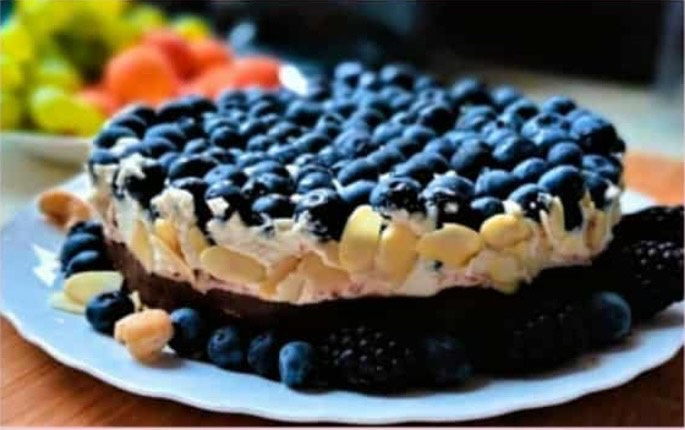
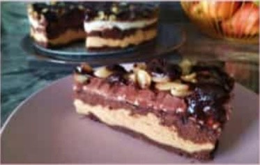
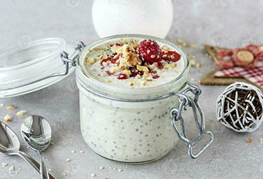

Welcome to Vegan Eire World
History of Veganism
Veganism has become very popular in the last few years.
I started my vegan journey about four and a half years ago due to some health issues, and to my surprise, this way of eating helped me recover quite quickly. My overall quality of life has improved tremendously, and I've been following a vegan lifestyle ever since.
Discover Our Sweet Recipes
Chocolate Cake with Blueberries
- 3 cups of cashews- soaked for an hour and rinsed
- 1/2 cup water
- 3/4 cup coconut oil -melted in a water bath
- 1/2 cup light agave syrup
- Bledn together and add:
- 15 tablespoons regular cocoa powder
Method: Mix slowly and thoroughly. Place into a springform pan (approx. 20cm diameter).Put in the fridge. After three hours, remove from the fridge, pour cashew cream on top, and sprinkle with blueberries
Cashew Cream
- 1 cup cashews - soaked for an hour and rinsed
- 6 tablespoons lemon juice
- 3 tablespoons light agave syrup
- 1 teaspoon natural vanilla extract or cream flavoring-for cakes
Method: Blend. If the cream is too thin, add a little coconut flour.
Sezame love

- Base Mixture:
- 500 ml tahini(sesame paste) - room temperature
- 2 cups almond flour
- 2 cups coconut flour
- 1/2 cup light agave syrup
- 1/2 teaspoon Himalayan salt
- Knead until you get a unifrom mass and divide into three equal parts
- Part 1:
- Add 3 tablespoons regular cocoa powder, knead by hand and place into a springform pan of about 20cm diameter.
- Part 2 :
- Add 3 tablespoons nut butter, 2 tablespoons decaf instant coffe - disolved in a minimal amount of water, knead by hand and place on the prepared base
- Part 3 :
- Add 3 tablespoons regular cocoa powder and 2 tablespoons nut butter, knead by hand and place on the prepared layer.Then pour over the light cream layer, then the dark cream layer, sprinkle with peanuts and cover with chocolate glaze. Leave overnightin the fridge
Method: Light Layer : 200ml coconut cream , add 2 tablespoons coconut flour.Mix
well
Dark Layer : 200ml coconut cream ,add 3 tablespoons cocoa powder and 3 tablespoons light
agave syrup. Mix well.
Chia pudding

- 2 tablespoons of chia seeds
- 1 cup milk of choice
- 1 tablespoons light agave syrup
- 1 teaspoon natural vanilla extract
Method: Put all the ingredients together in a jar and leave it overnight.
Banana smoothie

- 2 bananas
- 1 cup milk of choice
- 1 tablespoons light agave syrup
- 1 teaspoon natural vanilla extract
- 1 teaspoon of organic cinamon
- 1 teaspoon of ceremonial organic cacao
Method: Mix all together until smooth.